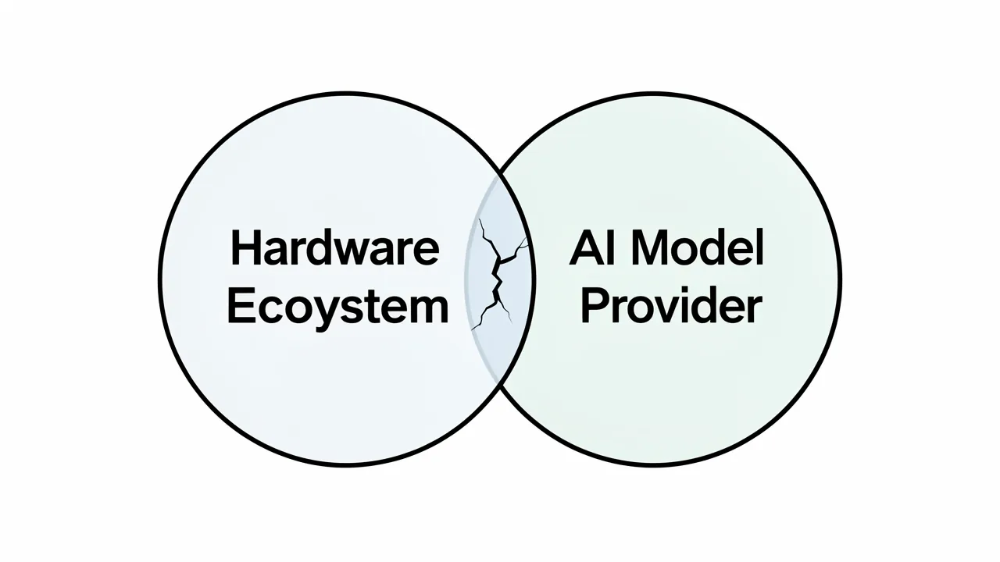

머스크의 반독점 소송에서 애플과 OpenAI가 보이는 법적 접근 방식의 차이점
최근 애플이 통합 전략을 변경하면서 법적 위험 요소가 오픈AI와 일론 머스크 간의 현재 진행 중인 소송으로부터 분리된 방식에 대한 분석.

DeepSage 계정을 무료로 생성하여 기사를 저장하고, 퀴즈 결과를 추적하며, 매일 제공되는 주요 정보를 가장 먼저 받아보세요.
- Musk is shifting focus from Apple to OpenAI.
- Apple's integration strategy avoids direct antitrust liability.
- OpenAI faces scrutiny over its non-profit mission drift.
- The legal battle tests existing antitrust frameworks for AI.
주요 하드웨어 파트너의 전략적 철수가 반독점 조사와 관련된 법적 환경에 근본적인 변화를 가져올까요? 이 질문은 현재 일론 머스크, 애플, 그리고 OpenAI 간의 갈등에서 핵심적인 문제입니다. 최근 머스크가 애플에 대해 비교적 유연한 태도를 보인 것은 그가 OpenAI의 기업 구조에 대해 지속적으로 취하고 있는 공격적인 소송과는 대조적입니다.

1. 애플과 OpenAI의 관계 변화
지난 몇 달 동안 애플의 생태계와 OpenAI의 대규모 언어 모델(LLM)의 결합은 머스크의 비판의 주요 대상이었습니다. 그는 챗GPT가 애플의 운영체제에 깊숙이 통합된 것이 지배적인 하드웨어 제공업체와 지배적인 AI 개발업체 간의 위험한 수준의 담합을 나타낸다고 주장했습니다. 그러나 최근 수사 방식의 변화는 전략적인 관계 변화를 시사합니다. 애플은 AI 기능을 직접적으로 반독점법 위반으로 이어지지 않도록 통합하는 복잡한 과정을 헤쳐나가고 있지만, OpenAI는 여전히 머스크의 법적 공세의 주요 대상입니다.

이러한 구분은 매우 중요합니다. 왜냐하면 다양한 유형의 기업 파트너십이 서로 다른 수준의 검토를 받게 된다는 점을 명확히 보여주기 때문입니다. 애플의 통합 전략은 다음 사항에 중점을 둡니다. 기기 내 처리 및 개인 정보 보호 기능 강화이는 단일하고 경쟁을 제한하는 독점 주장을 더욱 복잡하게 만듭니다. 반면, OpenAI와 머스크의 관계는 OpenAI의 원래 비영리 목적에 대한 위반 주장에 초점을 맞추고 있습니다.
2. 반독점 주장의 근거
머스크의 법적 전략은 애플과 OpenAI 간의 파트너십이 경쟁업체의 시장 진입 장벽을 만든다는 전제에 기반합니다. 이 주장은 애플이 OpenAI의 모델을 미리 설치하거나 깊숙이 통합함으로써 사실상 시장 지배력을 활용하여 대체 LLM 제공업체의 성장을 억압한다고 주장합니다.
이러한 기업들이 겪는 압박을 이해하려면 시장의 영향력 흐름을 살펴봐야 합니다.
- 하드웨어 주도: 애플은 사용자에게 접근할 수 있는 핵심 통로를 장악하고 있습니다.
- 모델 통합: OpenAI는 인공지능 기능을 제공합니다.
- 데이터 피드백 루프: 사용자 상호 작용을 통해 모델이 개선되어 시너지 효과를 냅니다.
- 경쟁 배제: 규모가 작은 개발자들은 통합된 기능을 제공하는 기업들과 경쟁할 만큼 충분한 유통망을 확보하지 못합니다.
머스크의 법적 관심사는 애플의 사업 통합 전략에서 벗어나 OpenAI의 기업 구조에 집중하는 방향으로 바뀌었습니다.
애플은 이러한 통합 방식을 사용자 중심의 개선 사항으로 제시하며 배타적인 전략으로 비치지 않도록 노력했지만, OpenAI에 대한 법적 압박은 여전히 계속되고 있습니다. 이는 OpenAI에 대한 소송이 단순한 시장 점유율 문제가 아니라, 보다 근본적인 문제에 관한 것이기 때문입니다. 기업 지배 구조의 변화 비영리 단체에서 폐쇄형 소스 기반의 영리 지향적인 조직으로 변화했습니다.
3. AI 생태계에 미치는 영향
이러한 법적 분쟁에서 나타나는 양상은 AI 기술 적용의 미래가 양분될 수 있음을 시사합니다. 애플이 자사의 통합 방식을 성공적으로 방어한다면, 우리는 다음과 같은 추세를 예상할 수 있습니다. 플랫폼별 AI 최적화 이는 기존 기업에 유리하게 작용할 수 있습니다. 그러나 OpenAI의 기업 구조에 대한 면밀한 검토가 강화된다면, AI 기업들이 자체적인 이익과 대중에게 보여지는 기업의 목표 사이의 균형을 어떻게 관리할지에 대한 상당한 변화를 가져올 수 있습니다.
OpenAI를 상대로 제기된 소송의 핵심 쟁점은 비영리 단체의 목적에서 이윤 추구를 목표로 하는 조직으로의 전환 과정에 있습니다.
이러한 법적 분쟁은 업계에 대한 일종의 규제 스트레스 테스트 역할을 합니다. 이 테스트는 기존의 반독점 규제 체계가 훨씬 단순한 소프트웨어 생태계를 위해 설계되었는지, 그리고 생성형 AI의 복잡성과 소비자 하드웨어에 신경망을 심층적으로 통합하는 문제를 해결할 수 있는지 검증합니다.
요약
일론 머스크는 애플이 AI 분야에서 차지하는 역할에 대한 관심을 상당히 줄였지만, OpenAI가 직면한 법적 난제는 여전히 심각합니다. 차이점은 문제의 성격에 있습니다. 애플은 자체 생태계 내에서 소프트웨어를 통합할 권리를 방어하는 반면, OpenAI는 조직의 본질적인 정체성을 방어하며 목표 변경 및 계약 위반 주장에 맞서고 있습니다.
- Antitrust
- Regulations intended to promote fair competition by preventing monopolies and unfair business practices.
- LLM
- Large Language Model; an AI trained on vast amounts of text to understand and generate human-like language.
DeepSage 계정을 무료로 생성하여 기사를 저장하고, 퀴즈 결과를 추적하며, 매일 제공되는 주요 정보를 가장 먼저 받아보세요.
이것도 마음에 드실 거예요.